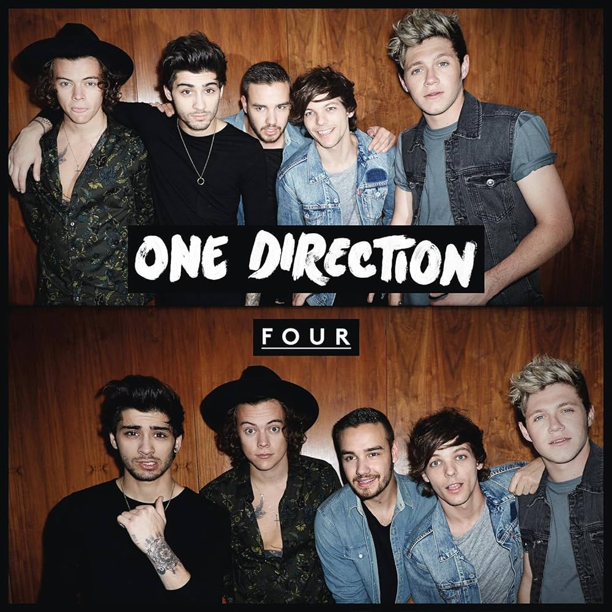

Línea de Tiempo
2010
Formación en X Factor

Tras audicionar individualmente, Harry, Louis, Liam, Niall y Zayn son reunidos en The X Factor UK como grupo.
2010
3er Lugar en X Factor

Terminan terceros en la competencia, ganando una base de fans que impulsa su carrera.
2011
Debut "Up All Night"

El 18 de noviembre lanzan su álbum debut, con “What Makes You Beautiful” llegando al #1 en Billboard.
2012
Gira "Take Me Home"

Publican "Take Me Home" y en febrero de 2013 inician la gira mundial con más de 120 conciertos.
2013
Estreno "This Is Us"
Se estrena el documental “One Direction: This Is Us” en cines, mostrando backstage y conciertos.
2013
"Midnight Memories"
El 25 de noviembre publican “Midnight Memories”, con un sonido más maduro y guitarras rockeras.
2014
"Where We Are" Tour
Abril–octubre: giran en estadios ante 3 millones de fans, recaudando casi $290 M.
2014
Álbum "FOUR"

El 17 de noviembre lanzan "FOUR", con éxitos como “Steal My Girl” y “Night Changes”.
2015
Zayn Malik se va

El 25 de marzo Zayn anuncia su salida para explorar un sonido R&B más personal.
2015
"Made in the A.M."

13 de noviembre publican su último álbum como cuarteto, con "Drag Me Down" y "Perfect".
2016
Hiato indefinido
30 de marzo anuncian pausa indefinida para que cada miembro inicie su carrera en solitario.
2020
10° Aniversario
23 de julio celebran 10 años con conciertos online, merch especial y mensajes de agradecimiento.
2024
Homenaje a Liam
Tras el fallecimiento de Liam Payne (24 oct 2024), comparten videos tributo y recuerdos.
2025
15° Aniversario
23 de julio de 2025: fans organizan listening parties, challenges y exposiciones celebrando 15 años.